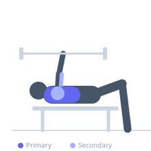

Exercise guide / Reverse-Grip Barbell Bench Press
Reverse-Grip Barbell Bench Press
The Reverse-Grip Bench Press is performed with a supinated (underhand) grip, meaning the palms face toward the head. This grip changes elbow mechanics, keeping them closer to the body throughout the press and shifting activation toward the upper pectoral fibers (clavicular head) and triceps. It is a useful variation for upper chest development and for lifters with certain shoulder issues.
Primary muscles
pectoralis major clavicular
pectoralis major sternal
Secondary muscles
triceps long head
triceps lateral head
deltoid anterior
Stabilizers
biceps brachii long head
pectoralis minor
Equipment
Standard Barbell
Flat Bench
Optional
Power Rack (Squat Cage)


Starting position
- Lie on a flat bench. Grip the bar with palms facing toward your face (supinated). Use a grip slightly inside shoulder-width for comfort. Thumbs wrap around the bar.
Setup
- It is strongly recommended to use a power rack. Have a spotter available as the supinated grip is biomechanically weaker and the bar can roll out of control if grip fails. Use a weight below your standard bench max.
Steps
- Step 1: Unrack bar with a supinated grip. The bar will feel different — elbows naturally tuck closer to the torso.
- Step 2: Lower the bar slowly to touch the lower chest, keeping elbows at approximately 45-50 degrees from the torso.
- Step 3: Press up and slightly back toward the rack to reach lockout.
- Step 4: Control the bar carefully on the return.
Coaching cues
- Keep elbows tucked — this is the nature of the grip
- Think about pressing the bar toward the ceiling, not toward your feet
Breathing
- Inhale and brace before descent. Exhale at lockout.
Range of motion
- Full ROM — bar touches lower chest, elbows extend to lockout.
Tempo
- 3-1-1-0
Common mistakes
- Using too wide a grip, creating uncomfortable wrist torque with a supinated grip
- Failing to inform the spotter of the grip type before attempting
Safety
- The supinated grip is weaker — reduce load by 15-25% from your standard bench
- Bar control is different — always use a spotter or power rack safeties
- Discontinue if wrist or elbow discomfort occurs
Training
- hypertrophy: 8–15 reps
- hypertrophy: 3–4 sets
- Rest: {'hypertrophy': 90}